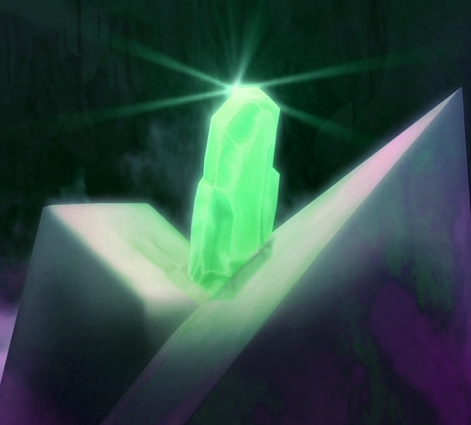
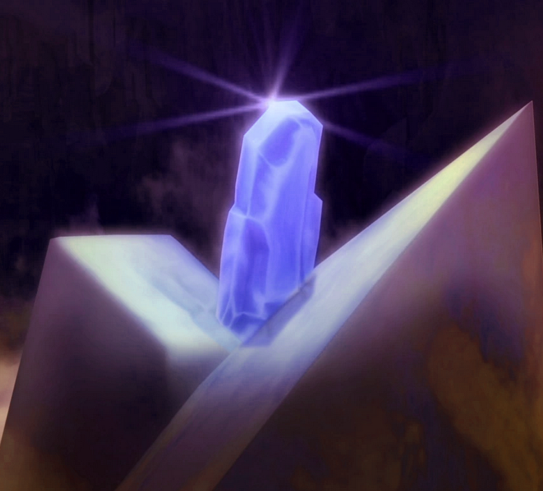

What Are Kyber Crystals?
Kyber Crystals are the main power source of Lightsabers. Among other applications. They come in an assortment of colors, and indicate the relationship the user has with the force. For example, as seen in the pictures below, they come in:
- Blue
- Green
- Purple
- Red
Kyber Crystals

